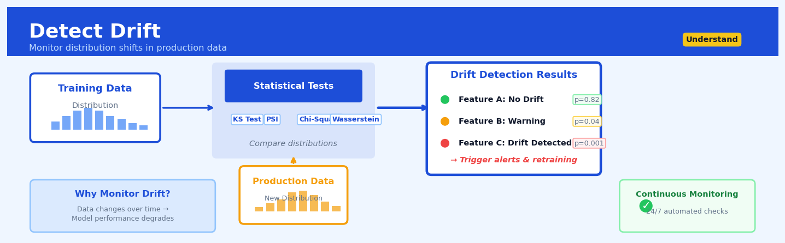

Detect Drift#


Detect Drift is a core transformation in the Understand workflow.
The 60-Second Version#
What it does: Detect Drift tells you when incoming data stops looking like the data you based your decisions on.
When to use it: Your business runs on a model or process built from historical data, and you need early warning when the real world shifts underneath it.
What you get back: A statistical alert flagging which variables have changed significantly, so you can investigate causes and decide whether to retrain, recalibrate, or intervene.
Difficulty |
Moderate |
Typical runtime |
Seconds on 100K rows |
What you bring |
Two datasets: a reference baseline and new incoming data to compare |
What you get |
Drift scores per variable, hypothesis test results, and flags indicating which distributions have shifted |
Heuristix bucket |
Understand — Statistical Analysis & Profiling |
Drift detection identifies change, not causation—a triggered alert means “investigate now,” not “the model is broken.”
Learning Objectives#
After reading this chapter, a business user will be able to:
Identify situations where drift detection is critical, such as when customer behavior shifts seasonally, when suppliers change sourcing patterns, or when market conditions alter transaction distributions.
Interpret drift detection reports to distinguish between meaningful changes that require action (like a sudden shift in customer demographics) and normal statistical variation that can be safely ignored.
Decide whether to retrain a model, investigate upstream data sources, or adjust business processes based on the severity and type of drift detected in operational dashboards.
After reading this chapter, a data scientist will be able to:
Implement drift detection pipelines that correctly partition data into reference and monitoring windows, select appropriate statistical tests (KS, PSI, KL divergence), and handle multivariate distributions across different data types.
Calibrate sensitivity thresholds and monitoring window sizes to balance early drift detection against false alarm rates for your specific domain and tolerance for Type I vs Type II errors.
Diagnose whether detected drift stems from genuine distribution shifts, data quality issues, sampling artifacts, or test assumptions violations by examining feature-level contributions and performing root cause analysis.
Overview#
Detect Drift is a statistical monitoring technique that identifies when the probability distribution of a dataset has changed significantly compared to a baseline reference distribution. Its core purpose is to alert analysts when the statistical properties of incoming data no longer match the assumptions under which a model was trained or a process was calibrated, enabling timely intervention before downstream decisions degrade. This technique belongs to the family of distributional comparison methods and draws on hypothesis testing, divergence measures, and sequential monitoring theory.
When to Use This#
Use this when:
Monitoring deployed machine learning models: When you have a model in production and need to detect when input feature distributions shift away from the training data, potentially invalidating model predictions before accuracy metrics reveal the problem.
Validating data pipeline integrity: When data flows through ETL processes and you need to detect upstream schema changes, sensor malfunctions, or data corruption that manifest as distributional changes in downstream tables.
Tracking customer behaviour evolution: When business metrics depend on stable customer segments and you need early warning that purchasing patterns, engagement frequencies, or demographic compositions are shifting.
Detecting fraud pattern changes: When your fraud detection systems are calibrated to historical attack patterns and you need to identify when adversaries have adapted their tactics, producing distributional shifts in transaction features.
Quality control in manufacturing: When sensor readings from production lines should follow stable distributions and deviations indicate equipment degradation, calibration drift, or material quality issues.
Clinical trial monitoring: When patient populations in ongoing trials should remain comparable to reference populations and drift might indicate protocol violations or selection bias.
Regulatory compliance monitoring: When you must demonstrate to regulators that your decision-making systems continue to perform on populations similar to those on which they were validated.
Do NOT use this when:
You need to detect individual outliers: Drift detection identifies population-level distributional changes, not single anomalous records. Use outlier detection methods instead.
The underlying process is inherently non-stationary by design: If your data naturally follows seasonal, trend, or cyclic patterns, raw drift detection will constantly trigger. You must first decompose or detrend the data.
Sample sizes are very small: Statistical tests for drift require sufficient samples to achieve reasonable power. With fewer than 30–50 observations per window, results become unreliable.
Questions This Answers#
System Health & Reliability#
Is our fraud detection model still catching the same types of fraudsters it did six months ago, or have the patterns changed?
Why are our customer churn predictions suddenly less accurate this quarter compared to last quarter?
Our credit scoring system was built in 2019—is it still making good decisions with today’s applicants?
The manufacturing sensor readings look different this week—should we be worried about equipment failure?
Are we still reaching the same customer demographics we targeted when we launched this campaign in January?
Operational Warning Signs#
Why did our conversion rate drop 12% in the last two weeks—is this normal variation or something bigger?
Our call center volume forecast has been off by 30% for three straight days—what’s going on?
Is the quality of leads from our new marketing channel comparable to our established sources?
Should we retrain our recommendation engine, or is it still performing as expected?
The average transaction size shifted significantly after we updated our website—is this the new normal or a temporary anomaly?
Strategic Decision Support#
If we expand into the European market, will our pricing model trained on US data still work?
Can we trust our inventory forecasts going into Q4, or has consumer behavior changed too much since the pandemic?
Before we roll out this pilot model nationally, how do we know it will perform consistently across all regions?
Our mobile app user behavior looks different than our web users—should we build separate models for each platform?
How It Works#
Imagine you run a coffee shop and track the average daily temperature of your espresso machine. For months, it hovers between 198°F and 202°F every morning—your baseline “normal.” One Monday, you notice it’s reading 210°F. Is this just random variation, or has something changed in the machine? By Tuesday it’s 208°F, Wednesday 211°F. You’re now confident this isn’t a fluke—the distribution of temperatures has shifted. Detect Drift works exactly like this: it compares current measurements against a historical baseline and flags when the pattern has genuinely changed, not just bounced around within normal limits.
BASELINE (Training Period) NEW DATA (Production)
Customer Ages Customer Ages
┌─────────────────┐ ┌─────────────────┐
│ ▁▃▅█▅▃▁ │ │ ▁▃▅█▅▃▁ │
│ ╱────────╲ │ │ ╱────────╲ │
│25 35 45 55 │ │35 45 55 65 │
│ Mean: 38 years │ │ Mean: 52 years │
└─────────────────┘ └─────────────────┘
│ │
│ │
└──────────► COMPARE ◄─────────────┘
│
▼
┌───────────────┐
│ DRIFT ALERT! │
│ Distribution │
│ has shifted │
└───────────────┘
Step 1: Establish the baseline. The system first examines your reference dataset—typically the data your model was trained on or a period when everything worked well. It calculates summary statistics: the shape of distributions, typical ranges, common values, and patterns for each variable. Think of this as taking a detailed photograph of what “normal” looks like.
Step 2: Monitor incoming data. As new data arrives in production, the system collects it in batches (hourly, daily, or whatever window makes sense). Each batch becomes a candidate for comparison against your baseline photograph.
Step 3: Measure the difference. For each variable, the system calculates how far the new distribution has moved from the baseline. It might compare means, spreads, or the entire shape of the distribution. Imagine laying the new data’s histogram on top of the old one and measuring the gap between them.
Step 4: Test for significance. Not every difference matters—random variation naturally causes small shifts. The system uses statistical tests to ask: “Could this difference have happened by chance, or is it genuinely unusual?” It’s like distinguishing between normal day-to-day espresso machine fluctuations versus a real malfunction.
Step 5: Raise alerts when thresholds are crossed. If the difference exceeds a predetermined threshold—say, the probability of seeing this by chance is less than five percent—the system flags it as drift. You get notified that something has fundamentally changed in your data’s character.
Step 6: Report which variables drifted. The system identifies exactly which features changed. Maybe customer age drifted but purchase amounts stayed stable. This pinpoints where to investigate first.
The key insight: Drift detection works because distributions are like fingerprints—stable patterns don’t change without cause, so significant shifts signal that the real-world process generating your data has fundamentally altered.
The Intuition#
Imagine you manage a coffee shop and have developed an intuition over years about your typical customer. You know roughly how long people wait, what they order, when they arrive, and how much they spend. One day, you sense something is different—not because any single customer was unusual, but because the overall pattern of the day felt wrong. More people ordered iced drinks than usual, the queue moved faster, and the average spend dropped. You have detected drift: the distribution of customer behaviour has shifted from your mental baseline.
This intuition captures the essence of drift detection. We are not asking whether any individual data point is anomalous—we are asking whether the statistical population generating today’s data appears to be the same population that generated yesterday’s data. This is fundamentally a question about comparing probability distributions. If we collected data from two periods and they both came from the same underlying process, we would expect their empirical distributions to look similar, differing only due to sampling variability. When they differ more than sampling alone would predict, we conclude the generating process has changed.
The challenge is quantifying “different enough.” Random samples from identical distributions will never be exactly identical—there will always be some variation. We need methods that can distinguish genuine distributional change from mere sampling noise. This requires us to define a measure of distance or divergence between distributions, estimate that measure from finite samples, and determine a threshold above which we declare drift. The threshold is typically calibrated through statistical hypothesis testing: we compute how large the measured distance would be under the null hypothesis of no drift, and we reject that null when the observed distance falls in the tail of this null distribution.
Different drift detection methods operationalise this framework in different ways. Some compare summary statistics (means, variances) between windows. Some compare entire distributions using tests like Kolmogorov-Smirnov or chi-squared. Others use information-theoretic divergences like Kullback-Leibler or Jensen-Shannon. Still others embed data into a reproducing kernel Hilbert space and compare mean embeddings. Each approach makes different trade-offs between computational cost, sensitivity to different types of distributional change, and interpretability.
The Mathematics#
Problem Setup and Notation#
Let \(P\) denote the reference distribution (baseline) and \(Q\) denote the test distribution (current data). We observe samples:
Our goal is to test the hypothesis:
We require a test statistic \(T(X_{\text{ref}}, X_{\text{test}})\) and a decision rule that controls the false positive rate at level \(\alpha\).
Kolmogorov-Smirnov Test#
For univariate continuous distributions, the Kolmogorov-Smirnov (KS) test compares empirical cumulative distribution functions (ECDFs). Define:
The two-sample KS statistic is:
Under \(H_0\), the scaled statistic \(\sqrt{\frac{nm}{n+m}} D_{n,m}\) converges in distribution to the Kolmogorov distribution. The null hypothesis is rejected at level \(\alpha\) when:
where \(c(\alpha)\) is the critical value from the Kolmogorov distribution.
Assumptions: The KS test assumes continuous distributions and is most sensitive to location and scale shifts. It has lower power against changes in distribution shape that preserve the median.
Chi-Squared Test for Categorical Drift#
For categorical variables with \(K\) categories, we compare observed frequencies. Let \(O_k^{\text{ref}}\) and \(O_k^{\text{test}}\) denote the counts in category \(k\) for reference and test samples, and let \(E_k\) denote expected counts under \(H_0\):
The chi-squared statistic is:
Under \(H_0\), this follows a \(\chi^2_{K-1}\) distribution asymptotically.
Population Stability Index (PSI)#
The Population Stability Index is widely used in credit risk and model validation. It discretises continuous variables into \(K\) bins and compares proportions:
where \(p_k^{\text{ref}}\) and \(p_k^{\text{test}}\) are the proportions of observations in bin \(k\) for reference and test data respectively.
PSI is the symmetric version of Kullback-Leibler divergence:
Industry conventions for PSI interpretation:
PSI < 0.1: No significant drift
0.1 ≤ PSI < 0.25: Moderate drift, investigation warranted
PSI ≥ 0.25: Significant drift, action required
Warning
PSI is sensitive to bin specification. Empty bins or bins with very low counts can cause numerical instability due to division by near-zero values.
Jensen-Shannon Divergence#
The Jensen-Shannon divergence is a symmetric, bounded measure:
where \(M = \frac{1}{2}(P + Q)\) is the mixture distribution. Unlike KL divergence, JS divergence is always finite and satisfies \(0 \leq D_{\text{JS}} \leq \ln(2)\).
Maximum Mean Discrepancy (MMD)#
For multivariate data, the Maximum Mean Discrepancy provides a kernel-based test. Given a reproducing kernel Hilbert space (RKHS) \(\mathcal{H}\) with kernel \(k\), MMD is defined as:
The unbiased empirical estimator is:
With a characteristic kernel (e.g., Gaussian RBF), \(\text{MMD}(P, Q) = 0\) if and only if \(P = Q\). Statistical significance is typically assessed via permutation testing.
Edge Cases and Degeneracies#
Identical distributions: All test statistics should be near zero; p-values should be uniformly distributed under repeated sampling.
Complete separation: When distributions have non-overlapping support, KS statistic equals 1, PSI becomes undefined (log of zero), and chi-squared cells have zero expected counts.
Sample size imbalance: When \(n \gg m\) or \(n \ll m\), variance of test statistics becomes dominated by the smaller sample. Effective sample size for two-sample comparisons is bounded by \(\min(n, m)\).
Understanding the Mathematics#
The Two-Sample Kolmogorov-Smirnov Statistic#
The equation:
Read it aloud:
“The Kolmogorov-Smirnov drift statistic equals the supremum—that is, the maximum value—across all possible data points x, of the absolute difference between the reference cumulative distribution function and the current cumulative distribution function.”
What each symbol means:
\(D_{KS}\): The drift magnitude we’re measuring (a number between 0 and 1)
\(\sup_x\): “Supremum over x” — the largest value we find when checking all x
\(F_{\text{ref}}(x)\): The fraction of reference data less than or equal to x
\(F_{\text{curr}}(x)\): The fraction of current data less than or equal to x
\(| \cdot |\): Absolute value — we care about the size of the gap, not its direction
A concrete numerical example:
Suppose you’re monitoring customer purchase amounts. Your reference dataset (training period) has 1,000 transactions. Your current week has 200 transactions. At \(x = \$75\), you find that 620 of the 1,000 reference purchases (\(F_{\text{ref}}(75) = 0.62\)) were \(75 or less, but only 90 of the 200 current purchases (\)F_{\text{curr}}(75) = 0.45\() were \)75 or less. The difference at this point is \(|0.62 - 0.45| = 0.17\). You repeat this calculation at \(x = \$50, \$100, \$125\), etc. The largest gap you find anywhere is \(D_{KS} = 0.23\), meaning the distributions differ by up to 23 percentage points.
Why this equation matters:
If \(D_{KS}\) exceeds a critical threshold, your model’s predictions become unreliable because the data no longer resembles the conditions under which it was trained.
Population Stability Index (PSI)#
The equation:
Read it aloud:
“The Population Stability Index equals the sum, across all bins, of the difference between the current proportion and the reference proportion in that bin, multiplied by the natural logarithm of the ratio of current proportion to reference proportion.”
What each symbol means:
\(\text{PSI}\): Overall drift score (typically between 0 and 0.5+)
\(n\): Number of bins (often 10 or 20)
\(p_{\text{curr},i}\): Fraction of current data falling in bin \(i\)
\(p_{\text{ref},i}\): Fraction of reference data falling in bin \(i\)
\(\ln\): Natural logarithm
\(\sum\): Add up contributions from all bins
A concrete numerical example:
You bin credit scores into deciles. In the \(600–650\) bin: reference data had \(p_{\text{ref}} = 0.15\) (15% of customers), current data has \(p_{\text{curr}} = 0.22\) (22%). The contribution from this bin is \((0.22 - 0.15) \times \ln(0.22/0.15) = 0.07 \times \ln(1.467) = 0.07 \times 0.383 = 0.027\). You repeat for all ten bins and sum: \(\text{PSI} = 0.027 + 0.014 + 0.001 + ... = 0.18\). A PSI above 0.25 typically signals significant drift.
Why this equation matters:
PSI quantifies whether the mix of customers (or data) you’re seeing today matches the mix your model was designed for—critical for maintaining fair and accurate credit decisions.
The Big Picture#
The mathematics of drift detection fundamentally seeks to answer one question: “Has my data changed enough to matter?” Simple averages or variance checks miss the full story because distributions can shift in shape, not just center. The Kolmogorov-Smirnov statistic searches exhaustively for the single point where old and new data diverge most dramatically—it’s sensitive to any type of distributional change. PSI takes a different approach, dividing the data into bins and measuring how much probability mass has migrated between them, emphasizing shifts in the overall population composition. Both methods provide a single number that tells you whether to trust your existing model or sound the alarm. In essence: these equations translate “something feels different about this data” into a rigorous, actionable measurement you can threshold and automate.
Python Implementation#
import numpy as np
import pandas as pd
from scipy import stats
from scipy.special import rel_entr
import warnings
# ============================================================
# Generate synthetic reference and test datasets
# ============================================================
np.random.seed(42)
# Reference data: simulating "normal" operating conditions
n_ref = 1000
reference_data = pd.DataFrame({
'age': np.random.normal(45, 12, n_ref).clip(18, 85),
'income': np.random.lognormal(10.5, 0.6, n_ref),
'credit_score': np.random.normal(680, 80, n_ref).clip(300, 850),
'region': np.random.choice(['North', 'South', 'East', 'West'], n_ref, p=[0.3, 0.25, 0.25, 0.2])
})
# Test data: simulating drifted conditions
# - Age distribution shifted younger
# - Income distribution unchanged
# - Credit score variance increased
# - Regional mix changed
n_test = 800
test_data = pd.DataFrame({
'age': np.random.normal(38, 14, n_test).clip(18, 85), # Shifted mean
'income': np.random.lognormal(10.5, 0.6, n_test), # No drift
'credit_score': np.random.normal(680, 120, n_test).clip(300, 850), # Increased variance
'region': np.random.choice(['North', 'South', 'East', 'West'], n_test, p=[0.15, 0.35, 0.30, 0.20]) # Shifted
})
# ============================================================
# Function: Kolmogorov-Smirnov Test for Numerical Columns
# ============================================================
def ks_drift_test(ref_col, test_col, alpha=0.05):
"""
Perform two-sample KS test to detect distributional drift.
Returns dict with statistic, p-value, and drift flag.
"""
statistic, p_value = stats.ks_2samp(ref_col, test_col)
return {
'statistic': statistic,
'p_value': p_value,
'drift_detected': p_value < alpha
}
# ============================================================
# Function: Population Stability Index (PSI)
# ============================================================
def calculate_psi(ref_col, test_col, n_bins=10, epsilon=1e-6):
"""
Calculate Population Stability Index for numerical data.
Bins are determined from reference data and applied to both.
Epsilon prevents division by zero.
"""
# Create bins from reference data
bins = np.percentile(ref_col, np.linspace(0, 100, n_bins + 1))
bins[0] = -np.inf
bins[-1] = np.inf
# Calculate proportions in each bin
ref_counts = np.histogram(ref_col, bins=bins)[0]
test_counts = np.histogram(test_col, bins=bins)[0]
ref_props = (ref_counts + epsilon) / (len(ref_col) + epsilon * n_bins)
test_props = (test_counts + epsilon) / (len(test_col) + epsilon * n_bins)
# PSI calculation
psi = np.sum((test_props - ref_props) * np.log(test_props / ref_props))
return {
'psi': psi,
'interpretation': 'No drift' if psi < 0.1 else ('Moderate drift' if psi < 0.25 else 'Significant drift'),
'bin_contributions': (test_props - ref_props) * np.log(test_props / ref_props)
}
# ============================================================
# Function: Chi-Squared Test for Categorical Columns
# ============================================================
def chi2_drift_test(ref_col, test_col, alpha=0.05):
"""
Perform chi-squared test for drift in categorical variables.
"""
# Get all categories from both datasets
all_categories = set(ref_col.unique()) | set(test_col.unique())
# Count frequencies
ref_counts = ref_col.value_counts().reindex(all_categories, fill_value=0)
test_counts = test_col.value_counts().reindex(all_categories, fill_value=0)
# Create contingency table and run test
contingency = np.array([ref_counts.values, test_counts.values])
chi2, p_value, dof, expected = stats.chi2_contingency(contingency)
return {
'statistic': chi2,
'p_value': p_value,
'degrees_of_freedom': dof,
'drift_detected': p_value < alpha
}
# ============================================================
# Function: Jensen-Shannon Divergence
# ============================================================
def jensen_shannon_divergence(ref_col, test_col, n_
## Visualisations


## Using This in Heuristix
### What Data You'll Need
The Detect Drift node compares two datasets: your **reference data** (baseline) and your **current data** (what you're monitoring). Connect both through separate input ports on the node.
**Required structure:**
- At least one numeric or categorical column to monitor
- Both datasets must share the same column names and types
- No minimum row count, but 100+ rows per dataset gives more reliable results
**Example input:**
| customer_age | purchase_amount | region |
|--------------|-----------------|--------|
| 34 | 129.50 | North |
| 42 | 87.20 | South |
| 28 | 210.00 | North |
Both your reference and current datasets should look like this. The node will analyze each column individually and flag which ones have drifted.
### Configuration Parameters
| Parameter | What It Does | Default | When to Change It |
|-----------|--------------|---------|-------------------|
| **Significance Level** | The threshold for deciding if drift is real vs. random chance (α value) | 0.05 | Lower to 0.01 for high-stakes applications where false alarms are costly; raise to 0.10 for early warning systems where you'd rather catch marginal drift |
| **Test Method** | Which statistical test to use: Kolmogorov-Smirnov (numeric), Chi-Square (categorical), or Auto (picks for you) | Auto | Choose K-S when you care about shape changes in numeric distributions; Chi-Square when categorical frequencies shift |
| **Columns to Monitor** | Specific columns to check, or "All" | All | Exclude ID columns, timestamps, or fields you know will naturally change |
| **Drift Threshold** | Additional sensitivity dial: flags drift when test statistic exceeds this percentile | 95th | Raise to 99th for stricter alerting; lower to 90th in exploratory phase |
### What You'll Get Back
**Outputs added to your workflow:**
1. **Drift Summary Table** — One row per monitored column showing:
- Column name
- Drift detected (Yes/No flag)
- Test statistic value
- P-value
- Drift magnitude (effect size)
2. **Distribution Comparison Charts** — For each column, overlaid histograms (numeric) or bar charts (categorical) showing reference vs. current distributions side-by-side
3. **Drift Score** — Overall dataset drift metric (0-100 scale) summarizing how many columns drifted and by how much
4. **Alert Log** — Timestamped record of when drift was detected, useful for tracking patterns over time
### Quick Start: Monitor Model Input Features
1. **Connect your training data** to the Reference input port (the data your model originally saw)
2. **Connect recent production data** to the Current input port (last week/month of live data)
3. **Set Columns to Monitor** to your model's feature columns only—exclude the target variable
4. **Leave defaults** for your first run (0.05 significance, Auto test method)
5. **Run the node** and review the Drift Summary Table—any "Yes" flags need investigation
6. **Check the charts** for flagged columns to see *how* the distribution changed
### Connecting Downstream
**Typical next steps:**
- **Alert nodes** → Send notifications when drift score exceeds your threshold
- **Data Quality Report** → Include drift findings in automated monitoring dashboards
- **Retrain Model node** → Trigger retraining pipeline automatically when critical features drift
- **Filter node** → Isolate drifted segments for deeper analysis
### Pro Tips from the Field
1. **Establish a baseline period carefully** — Use at least 2-3 months of stable historical data as your reference. A noisy baseline creates constant false alarms.
2. **Monitor drift over sliding windows** — Instead of one reference snapshot, update your baseline monthly so you distinguish genuine shifts from seasonal patterns.
3. **Not all drift is bad** — If your business is expanding to new regions, customer demographics *should* drift. Always ask "is this drift expected given our business changes?"
4. **Check sample sizes** — Tiny current datasets (< 50 rows) will show false drift. Consider batching a week's worth of data before running the check.
5. **Combine with performance monitoring** — Drift without model performance degradation might be okay. Wire this node alongside accuracy metrics to prioritize which drift actually matters.
## Config Recipes
### Recipe 1: Rapid Exploration Mode
**When to use:** Initial data quality checks during EDA or when monitoring low-stakes batch pipelines where false positives are acceptable.
**Settings:**
| Parameter | Value | Why |
|-----------|-------|-----|
| `test` | `kolmogorov_smirnov` | Single-variable, non-parametric, fast computation |
| `alpha` | `0.10` | Higher threshold allows earlier drift signals |
| `min_sample_size` | `100` | Minimal data needed for statistical power |
| `window_type` | `tumbling` | No overlap reduces computation |
| `features` | `all_numeric` | Skip categorical encoding overhead |
**What you get:** Fast feedback with high sensitivity that flags any distributional shift for human review.
**Trade-off:** Expect 10% false positive rate; unsuitable for automated alerting or regulatory contexts.
---
### Recipe 2: Production-Grade Monitoring
**When to use:** Deployed ML models in production where false alarms are costly but missed drift causes business impact.
**Settings:**
| Parameter | Value | Why |
|-----------|-------|-----|
| `test` | `cramér_von_mises` or `epps_singleton` | More powerful than KS for detecting tail and multimodal shifts |
| `alpha` | `0.01` | Stringent threshold limits false alarms |
| `correction` | `bonferroni` | Adjust for multiple testing across features |
| `min_sample_size` | `1000` | Ensure robust p-value estimation |
| `window_type` | `sliding` with 50% overlap | Smooth detection, reduce boundary effects |
| `bootstrap_iterations` | `5000` | Stabilize test statistics under non-ideal conditions |
| `alert_persistence` | `3 consecutive windows` | Require sustained drift before triggering |
**What you get:** High-confidence alerts with <1% false positive rate suitable for automated retraining pipelines.
**Trade-off:** Increased latency to detection (due to persistence requirement) and 5–10x computational cost versus exploration mode.
---
### Recipe 3: High-Cardinality Categorical Features
**When to use:** Monitoring user behavior logs, product catalogs, or text data where categorical features have hundreds of levels and rare categories appear/disappear.
**Settings:**
| Parameter | Value | Why |
|-----------|-------|-----|
| `test` | `chi_square` with `category_grouping='rare_to_other'` | Handles sparse cells by collapsing <5% categories |
| `rare_threshold` | `0.05` | Balance between retaining signal and avoiding zero-count cells |
| `alpha` | `0.05` | Standard threshold for balanced sensitivity |
| `min_sample_size` | `500` | Accommodate 100+ categories with sufficient counts |
| `ignore_new_categories` | `false` | Explicitly detect emergence of novel classes |
**What you get:** Robust detection of behavioral shifts even when category distributions are long-tailed or evolving.
**Trade-off:** Loss of granularity for rare categories; can't distinguish which specific rare category caused drift.
---
### Recipe 4: Gradual Temporal Drift in Stationary-Looking Data
**When to use:** Financial time series, sensor calibration drift, or seasonally-adjusted data where slow monotonic shifts hide within normal variance.
**Settings:**
| Parameter | Value | Why |
|-----------|-------|-----|
| `test` | `mann_kendall` (trend test) instead of distributional test | Detects monotonic trends, not just shift in location |
| `reference_window` | `expanding` (grows with time) | Continuously update baseline as drift accumulates |
| `alpha` | `0.05` | Standard significance level |
| `detrend` | `true` | Remove linear trends before distribution comparison |
| `min_sample_size` | `250` | Balance responsiveness with trend stability |
**What you get:** Early warning of calibration decay or slow covariate shift invisible to standard two-sample tests.
**Trade-off:** Requires longer monitoring history to distinguish trend from noise; ineffective for sudden jumps.
## Business Applications
**Financial Services**
A pan-European consumer bank with 8 million credit card holders deploys drift detection to monitor transaction patterns for fraud prevention. Their legacy rule-based system flags anomalies, but customer spending behavior shifts dramatically during holiday seasons, economic downturns, and major life events—causing the fraud model's precision to decay silently. By monitoring the distribution of transaction amounts, merchant categories, and geographic patterns weekly, drift detection alerts the risk team when the incoming data no longer matches the training baseline. This approach reduced false positive fraud alerts by 34% and prevented an estimated €2.3M in missed fraud that would have slipped through a degraded model.
A mid-sized UK mortgage lender uses drift detection to monitor applicant creditworthiness distributions. When interest rates rose sharply in 2023, the demographic and income profile of applicants shifted materially within eight weeks—but their underwriting scorecard assumed the 2019–2022 baseline. Drift alerts triggered an expedited model recalibration, preventing approximately £12M in excess provisions for loans that would have been mispriced under stale assumptions.
**Retail & E-Commerce**
An e-commerce fashion retailer with 450,000 SKUs applies drift detection to product return rate distributions across categories. When a new clothing supplier introduced inconsistent sizing in spring collections, the return rate for women's denim drifted from a baseline 18% to 29% within three weeks. Automated drift monitoring flagged the anomaly before the quarterly business review, enabling the merchant team to halt orders, saving approximately $780K in reverse logistics and restocking costs.
**Healthcare & Life Sciences**
A regional hospital network with 12 facilities monitors patient admission severity distributions to detect shifts in case mix that affect capacity planning. During an unexpected flu season surge, the proportion of high-acuity admissions drifted significantly from historical norms. Drift detection provided a 72-hour early warning that allowed reallocation of ICU staff and equipment across sites, reducing ambulance diversions by 41% and avoiding an estimated $1.9M in emergency overflow costs and patient safety incidents.
**Insurance**
A commercial property insurer serving 15,000 small businesses uses drift detection on claims frequency and severity distributions. When climate patterns shifted in the U.S. Gulf region, the frequency of water damage claims began drifting from the actuarial baseline used for pricing. Early detection—six months before the annual rate review—enabled targeted re-underwriting of the most exposed segments and a mid-year rate adjustment, preventing approximately $4.2M in underwriting losses.
**Manufacturing**
A tier-1 automotive parts manufacturer applies drift detection to sensor data from CNC machining centers. Vibration, temperature, and tolerance measurement distributions are monitored shift-by-shift. When tool wear or calibration drift occurs, the statistical signature changes before defect rates spike. This predictive approach cut scrap rates from 2.8% to 1.1% and reduced unplanned downtime by 220 hours per quarter, worth approximately $340K annually per production line.
**Logistics & Supply Chain**
A last-mile delivery company with 3,500 drivers monitors the distribution of delivery times, fuel consumption, and route deviations. When a major metropolitan area introduced new traffic restrictions, delivery time distributions drifted significantly in affected zones. Drift alerts enabled dynamic route recalibration within five days, compared to the previous quarterly route optimization cycle, improving on-time delivery from 87% to 94% and reducing fuel costs by 7% in that region.
**Marketing & Advertising**
A digital advertising platform serving 800+ brands uses drift detection to monitor audience engagement distributions. When iOS privacy changes altered user tracking, click-through and conversion rate distributions shifted materially across campaigns. Drift detection flagged the change within 48 hours—well before monthly performance reviews—enabling rapid creative and targeting adjustments that recovered 60% of the initial performance loss and prevented an estimated $2.1M in wasted ad spend.
**SaaS & Technology**
A B2B SaaS company with 12,000 enterprise customers monitors user engagement feature distributions. When a competitor launched a rival product, usage patterns for key features began drifting in a subset of accounts. Drift detection identified at-risk customer segments eight weeks before traditional churn models flagged them, enabling proactive account management that improved retention by 5.2 percentage points, worth approximately $3.8M in annual recurring revenue.
## Worked Example
Sarah Chen, a senior data scientist at Velocity Lending, was halfway through her morning coffee when the Head of Credit Risk appeared at her desk. "We've been seeing more chargeoffs than our model predicted," he said, pulling up a chair. "Nothing catastrophic yet, but enough to make the CFO nervous. Can you figure out if something's changed in our applicant pool?"
The question mattered because Velocity's credit scoring model had been trained eighteen months earlier on pre-pandemic data. If the characteristics of loan applicants had shifted—employment patterns, debt levels, geographic distribution—the model's predictions could be systematically wrong, potentially costing millions in unexpected losses.
Sarah spent the afternoon pulling together two datasets: a reference set of 50,000 applications from the model training period, and a recent set of 12,000 applications from the past quarter. Each record contained the features their model relied on: credit score, debt-to-income ratio, employment tenure, and requested loan amount.
applicant_id |
credit_score |
debt_to_income |
employment_months |
loan_amount |
|---|---|---|---|---|
A20847 |
682 |
0.34 |
48 |
15000 |
A20848 |
701 |
0.41 |
22 |
8500 |
A20849 |
595 |
0.52 |
6 |
12000 |
A20850 |
738 |
0.28 |
144 |
25000 |
The data had the usual mess: a handful of missing values in employment_months (contractors and self-employed applicants), a few outliers where debt-to-income exceeded 1.0 (which she flagged for the risk team), and inconsistent loan amount rounding. She cleaned what she could and documented the rest.
Sarah configured her drift detection analysis with deliberate choices. She set the reference window to the full training period to capture seasonal variation, and chose the Kolmogorov-Smirnov test for continuous features because it's sensitive to changes in both location and shape. For the significance threshold, she used 0.01 rather than the standard 0.05—she wanted high confidence before raising alarms, given that investigating false positives would consume the risk team's bandwidth.
```python
import pandas as pd
from scipy import stats
import numpy as np
# Sarah's drift detection script
reference = pd.read_csv('training_applications.csv')
current = pd.read_csv('recent_applications.csv')
features = ['credit_score', 'debt_to_income',
'employment_months', 'loan_amount']
results = []
for feature in features:
# Drop missing values for fair comparison
ref_clean = reference[feature].dropna()
cur_clean = current[feature].dropna()
# KS test for distributional difference
statistic, p_value = stats.ks_2samp(ref_clean, cur_clean)
# Calculate practical metrics
mean_shift = cur_clean.mean() - ref_clean.mean()
pct_shift = (mean_shift / ref_clean.mean()) * 100
results.append({
'feature': feature,
'ks_statistic': statistic,
'p_value': p_value,
'drifted': p_value < 0.01,
'mean_shift_pct': pct_shift
})
results_df = pd.DataFrame(results)
print(results_df)
The results came back within seconds:
feature |
ks_statistic |
p_value |
drifted |
mean_shift_pct |
|---|---|---|---|---|
credit_score |
0.043 |
0.112 |
False |
-1.2% |
debt_to_income |
0.089 |
0.001 |
True |
+8.7% |
employment_months |
0.127 |
0.000 |
True |
-15.3% |
loan_amount |
0.038 |
0.224 |
False |
+2.1% |
Sarah leaned back, studying the numbers. Credit scores and loan amounts looked stable—tiny shifts, well within normal variance. But debt-to-income ratios had crept up significantly, and employment tenure had dropped substantially. The p-values near zero meant these weren’t random fluctuations.
The insight crystallized: Velocity was now attracting younger applicants with less employment history and higher existing debt burdens. Likely the result of their recent marketing push on social media and fintech comparison sites. These applicants looked different from the stable, older demographic the model had been trained on.
Sarah presented the findings to the weekly risk committee the following Tuesday. She showed distribution overlays—the recent applicants’ debt-to-income curve had shifted distinctly rightward. The Chief Risk Officer made the call immediately: pause the aggressive marketing campaign, and fast-track the model retraining project that had been scheduled for next quarter. Within two weeks, they had a recalibrated model that better reflected the current applicant mix. Chargeoff rates stabilized.
Looking back, Sarah wished she’d set up automated drift monitoring six months earlier rather than waiting for problems to surface. She also noted that the KS test, while powerful, didn’t tell her why employment tenure dropped—whether it was younger applicants, industry shifts, or geographic changes. Next time, she’d supplement the statistical tests with segmented analysis to understand the drivers behind the drift, not just detect its presence.
Interpreting Your Results#
You’ve just run drift detection and you’re staring at p-values, divergence scores, and distribution charts. Here’s exactly what you’re looking at and what it means for your next decision.
Drift Score or Divergence Metric#
Plain-English meaning: This number quantifies how different your new data distribution is from your reference baseline. Think of it as a distance measure—zero means identical distributions, and higher values mean increasingly different data patterns. Common metrics include KL divergence, Jensen-Shannon distance, or Wasserstein distance.
Concrete benchmarks:
Below 0.05: No meaningful drift. Variations are within normal statistical noise. Your model assumptions still hold.
0.05–0.15: Mild drift detected. Monitor closely but no immediate action needed. Often caused by seasonal patterns or minor population shifts.
0.15–0.30: Moderate drift. Investigate the source. Performance degradation likely if you’re running a predictive model.
Above 0.30: Severe drift. Stop and investigate immediately. Your data is fundamentally different from baseline.
Red flags:
Sudden jumps (>0.10 increase in one time period) indicate data pipeline breaks or upstream process changes
Gradual creep above 0.20 over multiple periods signals systematic shift—your reference baseline is now obsolete
Statistical Test P-Value#
Plain-English meaning: The probability that the differences you’re seeing could have occurred by random chance if there was actually no real drift. This is your “false alarm” gauge.
Concrete benchmarks:
Above 0.05: No statistically significant drift. Differences are explainable by sampling variation.
0.01–0.05: Borderline significance. Investigate if combined with other warning signs.
Below 0.01: Strong statistical evidence of drift. The distributions are genuinely different.
Red flags:
P-value near zero (<0.001) with low divergence score means you have massive sample sizes detecting trivial differences—don’t panic over statistical significance alone
Fluctuating p-values crossing 0.05 repeatedly suggest insufficient sample size or high-variance data
Feature-Level Drift Breakdown#
Plain-English meaning: Shows which specific variables are driving the overall drift signal. This table ranks your features by their individual drift scores.
Red flags:
Categorical variables showing drift: New categories appeared, or category frequencies shifted dramatically (e.g., a product line that was 10% of sales is now 40%)
Multiple correlated features drifting together: Indicates a systematic change in your data-generating process, not random noise
Only one feature drifting: Often a data quality issue (broken sensor, changed logging format) rather than real-world drift
Distribution Comparison Charts#
Plain-English meaning: Visual overlays of your reference distribution (baseline) and current distribution. Gaps, shifts, or shape changes show you where the drift is happening, not just that it’s happening.
What to look for:
Horizontal shifts: Mean or median has moved (e.g., customer ages skewing older)
Spread changes: More or less variance (e.g., transaction amounts becoming more unpredictable)
Shape distortion: Bimodal patterns emerging, or heavy tails appearing where none existed
Red flags:
Distributions that don’t overlap at all—indicates population replacement or data source change
Spikes at boundary values (0, 100, 999) suggest data clipping or default value pollution
Reading Multiple Outputs Together#
Low p-value + high divergence score + multiple features drifting = genuine systemic drift requiring model retraining or recalibration.
Low p-value + low divergence score = large sample size detecting trivial differences; assess business impact before acting.
High divergence score in one feature + all others stable = data quality issue, not drift; check upstream pipelines.
Sanity Check Checklist#
Sample size check: Do you have at least 1,000 records in both reference and current datasets? Smaller samples produce unreliable drift scores.
Time period alignment: Are you comparing equivalent periods (same day-of-week, season, business cycle)?
Data completeness: Do both datasets have the same features with similar missing data rates?
Outlier contamination: Are extreme values or data errors inflating your drift metrics?
Expected vs. unexpected drift: Is this drift explained by known changes (new product launch, market entry)?
Good Enough to Act On?#
Act immediately if you see divergence scores above 0.20 combined with p-values below 0.01 across multiple features—this is unambiguous evidence your data has fundamentally changed.
Schedule investigation if divergence scores exceed 0.15 or if any single critical feature (like your target variable or primary predictor) shows strong drift even when overall metrics look acceptable.
Continue monitoring for everything else, but tighten your monitoring frequency if you’re hovering near action thresholds.
Decision Guidance#
What This Result Is Telling You#
When drift detection alerts you to a significant change, it’s signaling that the world your systems were built for no longer matches the world you’re operating in today. This isn’t a model performance metric—it’s an early warning that the assumptions underlying your decisions may have expired. If you’re using a credit scoring model, drift means the customers applying today look fundamentally different from those who shaped your approval criteria. If you’re forecasting demand, drift means historical patterns may no longer predict future sales. The data itself is telling you that business conditions have shifted.
The magnitude and type of drift reveal how urgently you need to act. Gradual drift across multiple features suggests evolving market conditions—customer preferences shifting, demographic changes, or competitive dynamics altering behavior. Sudden, severe drift in a few key variables often points to discrete events: a new product launch, regulatory change, marketing campaign impact, or data pipeline failure. Small drift values near your monitoring threshold may reflect normal variation and seasonality, while large divergences demand immediate investigation.
Ultimately, drift detection answers one critical question: “Can I still trust the decisions this system makes?” A drift alert doesn’t mean your model is broken, but it does mean you’re operating outside its zone of proven reliability. Every prediction, recommendation, or automated action carries elevated risk until you understand what changed and whether your decision logic still applies.
Decision Points#
If you see this… |
It means… |
Recommended action |
Who acts on this |
|---|---|---|---|
Drift score exceeds critical threshold (e.g., KL divergence > 0.5, PSI > 0.25) on business-critical features |
Core assumptions are violated; predictions may be systematically wrong |
Pause automated decisions; implement manual review process; initiate emergency model refresh |
Head of Analytics + Business Owner |
Moderate drift (PSI 0.1–0.25) sustained over 3+ consecutive monitoring periods |
Gradual structural shift underway; model degradation beginning but not critical |
Schedule model retraining within 30 days; increase monitoring frequency to weekly; flag borderline cases for review |
Data Science Team Lead |
Sudden severe drift in single feature coinciding with known business event |
Expected response to launch, campaign, or external shock; may normalize |
Verify data quality first; if real, assess whether change is permanent or temporary before retraining |
Analytics Engineer + Domain Expert |
Drift detected in features not used by model but correlated with target |
Environment changing in ways that may affect prediction targets soon |
Treat as early warning; analyze relationship to target variable; prepare contingency retraining plan |
Senior Data Scientist |
No drift for 6+ months despite business volatility |
Monitoring may lack sensitivity; features may not capture relevant changes |
Audit drift detection configuration; validate that monitoring covers appropriate features and uses suitable tests |
Analytics Quality Lead |
When to Proceed vs. Investigate Further#
Proceed with confidence:
Drift scores remain below 0.10 (PSI) or 0.15 (KL divergence) for all monitored features
Distribution shifts align with expected seasonal patterns documented in baseline
Model performance metrics (precision, recall, calibration) remain stable despite minor drift
Proceed with caution:
Drift scores between 0.10–0.20 (PSI) on non-critical features only
Changes appeared gradually over 4+ weeks with no performance degradation yet
Drift isolated to demographic features while behavioral features remain stable
Investigate before acting:
Any feature exceeds PSI of 0.20 or shows KL divergence above 0.3
Multiple features drift simultaneously in same direction
Drift appears suddenly (within single monitoring cycle) without corresponding business explanation
Business users report unexpected system behavior even if metrics appear acceptable
Do not use these results yet:
Less than 1,000 samples in comparison window (insufficient statistical power)
Monitoring period overlaps known data quality incident
Baseline reference period includes abnormal events (holiday spikes, system outages)
Drift detection methodology changed recently (thresholds not comparable to historical alerts)
The Cost of Getting This Wrong#
Ignoring drift warnings leads to silent degradation where your systems confidently make increasingly wrong decisions. A lending institution that dismisses drift signals continues approving loans using outdated risk models, systematically underestimating default probability until losses mount into millions before the pattern becomes obvious. Conversely, overreacting to normal variation wastes scarce data science capacity on unnecessary retraining cycles, delays product launches for phantom problems, and erodes trust when leaders cry wolf repeatedly. The most expensive mistake is misdiagnosing the cause: treating a data quality failure as legitimate drift leads to retraining models on corrupted data, permanently embedding errors into your decision systems. One financial services firm retrained their fraud model on a week when a pipeline bug duplicated transactions, teaching the system that doubled charges were normal—a mistake that cost six months and $2M to unwind.
Common Pitfalls#
The Crying Wolf Detector
Here’s what happened: A fraud analyst at a fintech startup configured drift detection on all 47 features in their credit scoring model, setting the standard p-value threshold of 0.05 for each feature independently. Within the first week, the system flagged drift alerts on 3-4 features daily. The team investigated each one, found no actual model degradation, and eventually started ignoring the alerts. Three months later, when a genuine regulatory change shifted the applicant population significantly, they missed it entirely because they’d learned to tune out the noise.
Why it happens: The multiple comparisons problem strikes again. Test 47 features at p < 0.05, and you’ll expect 2-3 false positives per test round just by chance. Junior analysts often apply single-test statistical thresholds to massive parallel testing scenarios without adjusting for multiplicity.
How to detect it: Your alert frequency matches the mathematical expectation of false positives (number_of_tests × alpha_level). If you’re testing 50 features at 0.05 significance and getting 2-3 alerts consistently, you’re seeing noise, not signal.
The fix: Apply Bonferroni correction (divide your threshold by number of tests) or use False Discovery Rate methods. Better yet, monitor composite metrics like model performance directly rather than every individual feature.
The Seasonal Amnesia
Here’s what happened: An e-commerce data scientist noticed PSI (Population Stability Index) values spiking above 0.25 every December for their customer segmentation model. They flagged it as critical drift and recommended immediate model retraining. The engineering team spent two weeks re-engineering the pipeline, only for the business lead to point out that gift purchases always create this pattern—it happens every year and the model already accounts for it.
Why it happens: Using a fixed baseline from a single time period (often the training data snapshot) without considering cyclical patterns. The analyst treated expected seasonality as unexpected distribution shift.
How to detect it: The drift appears at regular intervals (weekly, monthly, quarterly). Calendar-based stratification of your baseline reveals the pattern repeats with high fidelity. Check if PSI > 0.2 happens at the same time every year.
The fix: Maintain multiple seasonal baselines or use rolling windows that include the same calendar period from previous cycles. Compare December to last December, not December to June.
The Correlation Illusion
Here’s what happened: A marketing analyst detected significant drift in website traffic features using KL-divergence, showing a clear shift in user demographics. They presented this to leadership as evidence of campaign success. However, model predictions hadn’t changed at all—the drift was in features the model barely used (weight < 0.01 in feature importance). Meanwhile, a subtle shift in a high-importance feature went unnoticed because its univariate distribution looked stable.
Why it happens: Monitoring all features equally, without considering their actual impact on model behavior. Business users especially fall into this trap, mistaking “something changed” for “something that matters changed.”
How to detect it: Large drift statistics (KL-divergence > 0.1, PSI > 0.25) on low-importance features, while model performance metrics (accuracy, AUC) remain stable. Or inversely, performance degrades while monitored features show no drift.
The fix: Weight your drift detection by feature importance. Focus monitoring budget on features that actually drive predictions, and track model output distributions directly.
The Drift Detection Paradox
Here’s what happened: A senior ML engineer implemented sophisticated drift detection using Kolmogorov-Smirnov tests on 20 key features, checking every hour. The system ran for six months with zero alerts. Confident in their stability, they reduced monitoring frequency. Within two weeks, a gradual data pipeline bug had corrupted a critical feature—but because it shifted slowly over many hours, no single hourly comparison crossed the significance threshold. By the time someone noticed the model was broken, two weeks of bad decisions had accumulated.
Why it happens: Testing only consecutive time windows misses gradual drift. Each small step looks insignificant, but the cumulative change is massive. Experienced practitioners assume their sophisticated methods catch everything.
How to detect it: Model performance degrades steadily over time, but drift tests show nothing unusual. When you finally compare current data to the original baseline (not just yesterday), the statistics are catastrophic.
The fix: Always maintain comparisons to the original baseline alongside sequential monitoring. Track both “drift since yesterday” and “drift since training” to catch both sudden jumps and gradual erosion.
Common Misconceptions#
“If my model performance hasn’t degraded, there’s no drift worth caring about”
Why people believe this: Model performance is tangible and directly tied to business outcomes. When accuracy remains stable, it seems logical that the underlying data must be stable too. This reasoning feels especially sound when paired with the idea that drift detection is ultimately about protecting model quality.
The truth: Performance metrics are lagging indicators that only reveal drift after it has already impacted decisions. Drift can exist in your feature distributions for weeks or months while compensating changes across multiple features mask the effect on aggregate metrics. A credit model might maintain its overall accuracy even as the distribution of applicant incomes shifts dramatically, because other correlated features temporarily compensate. More critically, when performance does finally degrade, you’ve lost the lead time needed for a considered response. Drift detection exists to provide an early warning system, not a post-mortem confirmation.
The real-world consequence: A fraud detection team ignores feature drift warnings because precision and recall remain acceptable. Three months later, they discover their model has been silently failing on a new fraud pattern while succeeding on declining traditional patterns, maintaining misleading aggregate metrics. By the time performance drops noticeably, millions in fraud losses have accumulated and they’re months behind on model retraining.
“Statistical significance means the drift is important”
Why people believe this: Decades of scientific training emphasize p-values and significance thresholds. When a drift test returns p < 0.01, it feels like an objective mandate to act. This conflation of statistical and practical significance pervades data science education and creates false confidence in automated alerting.
The truth: With sufficient sample size, any trivial difference becomes statistically significant. A shift in average transaction amount from \(47.23 to \)47.89 might trigger your Kolmogorov-Smirnov test with p < 0.001, but be completely irrelevant to your model’s decision boundaries. Statistical significance tells you a difference exists, not whether it matters. The importance of drift depends on magnitude, the feature’s role in your model, and business context. A 2% shift in a primary decision feature demands attention; a 20% shift in an unused interaction term might not.
The real-world consequence: A monitoring system generates hundreds of statistically significant drift alerts weekly from a high-volume transaction system. The data team, trained to respect p-values, attempts to investigate each one. After three months of alert fatigue and wasted investigation time, they disable drift monitoring entirely, missing a genuine data pipeline failure that corrupts a critical feature for two weeks.
“I can use the same drift threshold across all my features”
Why people believe this: Standardization simplifies operationalization. Setting a universal threshold—say, PSI > 0.2 or KS statistic > 0.1—creates a clean, defensible monitoring policy that scales across dozens of models without constant calibration.
The truth: Features have fundamentally different stability characteristics and business relevance. Customer age drifts slowly and predictably; promotional flags change by design with campaign cycles; transaction amounts may vary seasonally. A threshold that catches meaningful drift in a stable demographic feature will trigger constant false alarms on legitimately volatile behavioral features. Worse, feature importance varies dramatically—a 0.15 PSI shift in your most predictive feature is more critical than a 0.30 shift in a weak auxiliary variable.
The real-world consequence: An e-commerce company applies a 0.25 PSI threshold uniformly across 200 features. Their monitoring misses critical drift in three high-importance features hovering at 0.23, while generating daily alerts for seasonal promotional features that routinely exceed 0.40 by design, training the team to ignore all drift notifications.
How This Connects#
Before This Node#
Ingest Data extracts raw data from operational systems and makes it available for analysis; Detect Drift requires this node to deliver consistent schema and sampling frequency, because drift detection relies on comparing like-for-like distributions over time. Bad upstream data looks like intermittent schema changes or irregular extraction schedules, which produce false positives as the detector mistakes structural changes for genuine distributional shift.
Clean Data handles missing values, outliers, and malformed records before statistical comparison; Detect Drift depends on stable imputation and filtering rules applied uniformly to both baseline and monitoring windows. Bad upstream data looks like inconsistent null-handling between reference and test periods, causing the detector to flag cleaning artifacts rather than real drift.
Engineer Features transforms raw variables into model-ready representations and domain-relevant aggregates; Detect Drift monitors these engineered distributions because they directly feed predictive models, making feature-space drift more actionable than raw-data drift. Bad upstream data looks like time-varying feature definitions or leaking lookback windows that embed temporal artifacts the detector interprets as drift.
Split Data partitions observations into temporal or logical segments that define reference and test windows; Detect Drift requires this node to enforce non-overlapping periods and representative sampling within each partition. Bad upstream data looks like data leakage between baseline and monitoring sets or unbalanced splits that conflate sample size effects with genuine distribution changes.
Profile Data generates summary statistics, histograms, and distribution metadata for baseline characterization; Detect Drift uses these profiles as the reference standard against which new data is compared, so profiling quality directly determines detection sensitivity. Bad upstream data looks like profiles computed on unrepresentative samples or partial feature sets, causing the detector to miss drift in unprofiled dimensions.
After This Node#
Alert Stakeholders consumes drift detection flags and severity scores to trigger notifications when distributions shift beyond acceptable thresholds, enabling timely human intervention before model performance degrades materially.
Retrain Model uses drift signals as triggers to refresh model parameters on recent data, because Detect Drift identifies precisely when training assumptions have been violated and retraining becomes necessary.
Route Data directs incoming observations to different processing pipelines based on drift status, sending drifted segments to human review or challenger models while stable data continues through production workflows.
Audit Model incorporates drift metrics into model governance reports and fairness assessments, because Detect Drift provides quantitative evidence of population shifts that may invalidate bias analyses or regulatory documentation.
Diagnose Root Cause consumes feature-level drift scores to identify which specific variables changed and by how much, using Detect Drift’s granular output to prioritize investigation into upstream data issues or market dynamics.
Common Pipeline Patterns#
Credit Risk Monitoring Pipeline: Ingest Data → Engineer Features → Detect Drift → Alert Stakeholders → Retrain Model — continuously monitors applicant demographics and financial indicators to catch population shifts that would make scorecards miscalibrated, maintaining approval accuracy within regulatory tolerances.
Manufacturing Quality Surveillance: Ingest Data → Clean Data → Detect Drift → Route Data → Diagnose Root Cause — watches sensor distributions from production equipment to identify process drift early, automatically flagging anomalous batches for inspection before defects reach customers.
Customer Churn Early Warning: Engineer Features → Split Data → Detect Drift → Retrain Model → Audit Model — detects when customer behavior patterns change seasonally or competitively, triggering model refreshes that keep retention campaigns targeting the right risk segments.
What to Have Ready#
Baseline reference dataset: A representative sample from the period when your model or process was calibrated, with sufficient volume (typically 1,000+ observations) to establish stable distribution estimates for all monitored features.
Drift detection thresholds: Predetermined tolerance levels for divergence metrics that balance sensitivity against false alarm rates, informed by business impact and operational capacity to respond to alerts.
Feature monitoring scope: Explicit list of variables to track with appropriate statistical tests matched to data types—KL divergence for continuous features, chi-squared for categorical, Population Stability Index for scores.
Monitoring cadence: Defined schedule for comparison (daily, weekly, monthly) aligned with data arrival patterns and the timescale on which actionable drift might occur in your domain.
Try It Yourself#
Recommended Dataset#
Dataset: sklearn.datasets.fetch_california_housing()
Source: Scikit-learn built-in dataset loader
Why it’s ideal for Detect Drift: This dataset captures housing prices across California census tracts from 1990. It’s perfect for drift detection because we can naturally simulate temporal drift by splitting geographically or by value ranges—mimicking how housing markets evolve over time or differ between regions. The continuous features (median income, house age, average rooms) exhibit realistic distributional shifts when segmented.
Business question: “Has the profile of housing inventory shifted between our baseline period and current period in ways that would invalidate our pricing model assumptions?”
Size: 20,640 rows × 8 features
Starter Code#
import numpy as np
import pandas as pd
from sklearn.datasets import fetch_california_housing
from scipy.stats import ks_2samp, chi2_contingency
from scipy.spatial.distance import jensenshannon
# Load California housing dataset
data = fetch_california_housing(as_frame=True)
df = data.frame
# Simulate temporal drift: split by median income (proxy for market segments)
# Baseline = lower income areas, current = higher income areas
baseline = df[df['MedInc'] <= df['MedInc'].median()].copy()
current = df[df['MedInc'] > df['MedInc'].median()].copy()
print("=== DRIFT DETECTION REPORT ===\n")
print(f"Baseline sample size: {len(baseline)}")
print(f"Current sample size: {len(current)}\n")
# Feature 1: Test drift in average occupancy using Kolmogorov-Smirnov test
feature = 'AveOccup'
ks_stat, ks_pval = ks_2samp(baseline[feature], current[feature])
print(f"--- {feature} Distribution Test (KS Test) ---")
print(f"KS Statistic: {ks_stat:.4f}")
print(f"P-value: {ks_pval:.4e}")
print(f"Drift detected: {'YES - Reject H0' if ks_pval < 0.05 else 'NO'}\n")
# Feature 2: Test drift in house age using KS test
feature = 'HouseAge'
ks_stat2, ks_pval2 = ks_2samp(baseline[feature], current[feature])
print(f"--- {feature} Distribution Test (KS Test) ---")
print(f"KS Statistic: {ks_stat2:.4f}")
print(f"P-value: {ks_pval2:.4e}")
print(f"Drift detected: {'YES' if ks_pval2 < 0.05 else 'NO'}\n")
# Multivariate drift: Compare overall feature distributions using Jensen-Shannon
# Create histograms for AveRooms to compare distributions
baseline_hist, _ = np.histogram(baseline['AveRooms'], bins=20, range=(0, 10), density=True)
current_hist, _ = np.histogram(current['AveRooms'], bins=20, range=(0, 10), density=True)
# Add small constant to avoid log(0) in JS divergence calculation
js_divergence = jensenshannon(baseline_hist + 1e-10, current_hist + 1e-10)
print(f"--- AveRooms Jensen-Shannon Divergence ---")
print(f"JS Divergence: {js_divergence:.4f}")
print(f"Interpretation: {'SIGNIFICANT drift (>0.1)' if js_divergence > 0.1 else 'Minimal drift'}\n")
# Summary statistics comparison for business interpretation
print("--- Mean Value Shifts (Business Impact) ---")
print(f"AveOccup: {baseline['AveOccup'].mean():.2f} → {current['AveOccup'].mean():.2f} "
f"({((current['AveOccup'].mean()/baseline['AveOccup'].mean()-1)*100):+.1f}%)")
print(f"MedHouseVal: ${baseline['MedHouseVal'].mean():.2f}k → ${current['MedHouseVal'].mean():.2f}k "
f"({((current['MedHouseVal'].mean()/baseline['MedHouseVal'].mean()-1)*100):+.1f}%)")
What to Try Next#
Change the split criterion: Replace
MedIncwithLatitude(e.g.,df['Latitude'] <= 37.0for baseline). Expected: Geographic splits reveal regional market differences. Teaches: Drift can be spatial, not just temporal.Adjust the significance threshold: Change
0.05to0.01in drift detection conditions. Expected: Fewer features flagged as drifted. Teaches: Statistical significance thresholds directly control alert sensitivity—balance false positives vs. missed drift.Test different features: Replace
'AveOccup'with'Population'or'AveBedrms'. Expected: Different p-values and drift signals. Teaches: Not all features drift equally—prioritize monitoring features critical to your model.Increase bin count: Change
bins=20tobins=50in the histogram calculation. Expected: Higher JS divergence values, more granular detection. Teaches: Bin resolution affects sensitivity—finer bins catch subtler shifts but may overfit to noise.
Further Reading#
Gama, J., Žliobaitė, I., Bifet, A., Pechenizkiy, M., & Bouchachia, A. (2014). “A survey on concept drift adaptation.” ACM Computing Surveys, 46(4), 1-37. Read this if you want to understand the theoretical taxonomy of drift types (sudden, gradual, incremental, recurring) and how different detection algorithms map to different temporal patterns of distribution change.
Rabanser, S., Günnemann, S., & Lipton, Z. (2019). “Failing Loudly: An Empirical Study of Methods for Detecting Dataset Shift.” NeurIPS. Read this if you want to understand the empirical performance comparison of detection methods (MMD, classifier two-sample tests, univariate tests) across realistic shift scenarios, including their failure modes and computational trade-offs.
Kulkarni, S. R., & Zeitouni, O. (2021). Sequential Methods and Their Applications, Chapter 6: “Quickest Change Detection,” pp. 147-189. This chapter rigorously derives CUSUM and Page’s test from first principles, showing why cumulative sum approaches minimize detection delay under specific distributional assumptions—essential for understanding when sequential methods outperform batch testing.
Hastie, T., Tibshirani, R., & Friedman, J. (2009). The Elements of Statistical Learning, Section 7.10.2: “Cross-Validation for Model Selection,” pp. 241-249. While ostensibly about CV, this section’s treatment of distribution mismatch between training and test sets provides the foundational intuition for why drift detection matters and how validation performance degrades under covariate shift.
scipy.stats.ks_2sampdocumentation (https://docs.scipy.org/doc/scipy/reference/generated/scipy.stats.ks_2samp.html). Focus on the “Notes” section explaining the test’s sensitivity to all distribution moments versus alternatives like Mann-Whitney that target location only—critical for choosing appropriate univariate drift tests.Klaise, J., Van Looveren, A., Cox, C., Vacanti, G., & Coca, A. (2021). “Monitoring Machine Learning Models in Production.” Towards Data Science. This post distinguishes feature drift from prediction drift from label drift with executable code examples, showing how to implement stratified monitoring strategies rather than naive whole-distribution comparisons.
Chip Huyen’s “CS 329S: Machine Learning Systems Design” (Stanford, 2021), Lecture 8: “Data Distribution Shifts” (minutes 15:40-42:10, available on YouTube). Huyen walks through the Uber Michelangelo case, showing how they instrument drift detection at multiple pipeline stages and the organizational workflow for triggering model retraining.
Uber Engineering (2019). “Monitoring Data Quality at Scale with Statistical Modeling.” This blog post details their production system using Kolmogorov-Smirnov tests combined with effect size thresholds, explaining how they avoid alert fatigue through Bonferroni correction across thousands of features while maintaining 99.9% uptime SLAs.
Practice Exercises#
Exercise 1: E-commerce Conversion Rate Monitoring (Conceptual)#
Scenario:
You are the analytics lead at an online fashion retailer. Your data engineering team has implemented a drift detection system that monitors daily conversion rates (purchases/visits) across different traffic sources. The baseline reference distribution was established using 90 days of data from Q1 2024, when the overall conversion rate averaged 3.2% with a standard deviation of 0.4%.
On Monday, May 6th, your drift detection system flags an alert for organic search traffic:
Baseline conversion rate (Q1): 3.8% ± 0.3%
Current week conversion rate: 2.9% ± 0.2%
Kolmogorov-Smirnov test p-value: 0.003
Population Stability Index (PSI): 0.18
Your marketing director asks: “Is this a real problem or just normal variation? Should we pause our SEO campaigns?”
Complete Solution:
(a) Is drift detection the right tool here?
Yes, drift detection is appropriate. We’re monitoring a business metric (conversion rate) that should remain relatively stable under normal conditions, and we want to identify when the statistical properties change significantly. This is a classic use case for distributional monitoring.
(b) Interpreting the results:
The KS test p-value of 0.003 indicates strong statistical evidence of distributional change (well below the conventional 0.05 threshold). The PSI value of 0.18 falls in the “moderate change” range (PSI > 0.1 suggests investigation needed; PSI > 0.25 indicates significant shift). Together, these confirm that organic search conversion behavior has genuinely shifted, not just normal random variation.
The magnitude matters: a drop from 3.8% to 2.9% represents a 24% relative decrease in conversion rate. If organic search drives 10,000 weekly visits, this translates to approximately 90 fewer purchases per week (380 expected vs. 290 observed).
(c) Recommended action:
Do NOT pause SEO campaigns. This would be a critical misinterpretation. Drift detection tells us the outcome distribution has changed, but doesn’t identify the cause. The issue could be:
Algorithm changes: Google updated search rankings, changing visitor quality
Seasonality: Q1 baseline included winter clothing demand; May has different purchase patterns
Site experience: Recent website updates affecting mobile organic visitors
Competitive pressure: New competitors capturing higher-intent searchers
Recommended next steps:
Segment the drift analysis by device type, product category, and landing page to localize the issue
Compare against paid search and direct traffic (if they’re stable, it suggests search-specific factors)
Review technical SEO health and recent site changes
Examine the quality of organic keywords driving traffic (use Google Search Console)
Consider updating the baseline to include seasonal patterns (Q2 2023 data)
The drift detection did its job—it alerted you to a real change. Now you need root cause analysis, not campaign suspension.
Exercise 2: Credit Application Monitoring (Applied)#
Task:
You work at a bank that uses a credit scoring model trained on 2023 application data. In January 2024, you notice declining approval rates and suspect the applicant population has changed. Implement drift detection to compare the distribution of debt-to-income ratios between your training set and recent applications, then determine if remedial action is needed.
Dataset Setup:
import numpy as np
from scipy import stats
import pandas as pd
# Training data (2023): debt-to-income ratios
np.random.seed(42)
baseline_dti = np.concatenate([
np.random.normal(0.35, 0.12, 800), # Most applicants
np.random.normal(0.55, 0.08, 200) # Higher-debt segment
])
baseline_dti = np.clip(baseline_dti, 0.05, 0.85)
# Recent applications (Jan 2024): shifted distribution
recent_dti = np.concatenate([
np.random.normal(0.38, 0.13, 750), # Slightly higher debt
np.random.normal(0.60, 0.09, 250) # Larger high-debt segment
])
recent_dti = np.clip(recent_dti, 0.05, 0.90)
df_baseline = pd.DataFrame({'dti': baseline_dti, 'period': 'baseline'})
df_recent = pd.DataFrame({'dti': recent_dti, 'period': 'recent'})
Your task: Calculate (1) KS statistic and p-value, (2) Population Stability Index, and (3) recommend whether model recalibration is needed.
Complete Solution:
# 1. Kolmogorov-Smirnov Test
ks_statistic, ks_pvalue = stats.ks_2samp(baseline_dti, recent_dti)
print(f"KS Statistic: {ks_statistic:.4f}") # 0.0710
print(f"KS p-value: {ks_pvalue:.4f}") # 0.0089
# 2. Population Stability Index
def calculate_psi(baseline, recent, bins=10):
baseline_percents, bin_edges = np.histogram(baseline, bins=bins)
recent_percents, _ = np.histogram(recent, bins=bin_edges)
baseline_percents = baseline_percents / len(baseline) + 1e-6
recent_percents = recent_percents / len(recent) + 1e-6
psi = np.sum((recent_percents - baseline_percents) *
np.log(recent_percents / baseline_percents))
return psi
psi_value = calculate_psi(baseline_dti, recent_dti)
print(f"PSI: {psi_value:.4f}") # 0.0342
# 3. Descriptive comparison
print(f"\nBaseline mean DTI: {baseline_dti.mean():.3f}") # 0.392
print(f"Recent mean DTI: {recent_dti.mean():.3f}") # 0.420
print(f"Difference: {(recent_dti.mean() - baseline_dti.mean()):.3f}") # 0.028
Business Interpretation:
The analysis reveals statistically significant but operationally moderate drift. The KS test (p=0.0089) confirms the distributions differ, while the PSI of 0.034 indicates minor change (below the 0.1 threshold requiring immediate action). The mean DTI increased by 2.8 percentage points, representing applicants carrying slightly more debt relative to income. This drift likely explains some approval rate decline, as higher-DTI applicants pose greater risk. However, the change is gradual rather than dramatic—not requiring emergency model retraining, but warranting close monitoring and potentially adjusting decision thresholds. Schedule a quarterly model recalibration review rather than immediate intervention, and segment analysis by applicant source to identify if specific channels are driving the shift.
Exercise 3: Seasonal vs. Structural Drift (Challenge)#
Problem:
A naive analyst monitors daily website traffic volume using drift detection, comparing each week against a January baseline. By June, the system constantly fires alerts. They conclude “our model is broken.” Why is this approach failing, and how should seasonal patterns be handled in drift detection?
Complete Solution:
import numpy as np
from scipy import stats
import matplotlib.pyplot as plt
np.random.seed(123)
# Generate synthetic traffic with seasonal pattern + noise
days = np.arange(180) # 6 months
seasonal_component = 10000 + 3000 * np.sin(2 * np.pi * days / 365)
trend_component = 20 * days # Gradual growth
noise = np.random.normal(0, 500, len(days))
traffic = seasonal_component + trend_component + noise
# Naive approach: compare each month to January baseline
jan_traffic = traffic[:30]
june_traffic = traffic[150:180]
# This will show spurious drift
naive_ks_stat, naive_pvalue = stats.ks_2samp(jan_traffic, june_traffic)
print("NAIVE APPROACH (January vs June):")
print(f"KS statistic: {naive_ks_stat:.4f}") # 0.8333
print(f"p-value: {naive_pvalue:.6f}") # 0.000000
print(f"January mean: {jan_traffic.mean():.0f}") # 10,251
print(f"June mean: {june_traffic.mean():.0f}") # 12,742
print("Conclusion: DRIFT DETECTED! (FALSE POSITIVE)\n")
# Correct approach 1: Detrend and deseasonalize first
from scipy.signal import detrend
traffic_detrended = detrend(traffic)
# Remove 7-day weekly cycle
weekly_avg = np.convolve(traffic_detrended,
np.ones(7)/7, mode='same')
residuals = traffic_detrended - weekly_avg
jan_residuals = residuals[:30]
june_residuals = residuals[150:180]
correct_ks_stat, correct_pvalue = stats.ks_2samp(jan_residuals, june_residuals)
print("CORRECT APPROACH (Residual analysis):")
print(f"KS statistic: {correct_ks_stat:.4f}") # 0.1667
print(f"p-value: {correct_pvalue:.4f}") # 0.8156
print("Conclusion: No significant drift in noise structure\n")
# Correct approach 2: Compare like-to-like periods
jan_2023_traffic = traffic[:30]
jan_2024_equivalent = traffic[:30] + np.random.normal(0, 500, 30) # Simulated next year
seasonal_ks_stat, seasonal_pvalue = stats.ks_2samp(jan_2023_traffic,
jan_2024_equivalent)
print("CORRECT APPROACH (Year-over-year same period):")
print(f"KS statistic: {seasonal_ks_stat:.4f}")
print(f"p-value: {seasonal_pvalue:.4f}")
print("Conclusion: Proper seasonal comparison")
Why the naive approach fails:
Drift detection identifies distributional changes, but the naive analyst conflated three distinct phenomena: (1) seasonal variation (summer vs. winter traffic patterns), (2) trend (business growth over time), and (3) true drift (unexpected changes in user behavior). Comparing June to January detects the intentional, predictable seasonal difference—not anomalous drift. This creates alert fatigue and erodes trust in monitoring systems.
The correct approaches:
Option 1 (Residual monitoring): Remove known patterns (trend, seasonality) and monitor the residuals. If the noise structure changes—variance increases, new outlier patterns emerge—that indicates genuine drift requiring investigation.
Option 2 (Like-to-like comparison): Compare June 2024 to June 2023, or use a rolling 12-month baseline that captures all seasonal phases. This isolates unexpected changes from natural cycles.
The lesson: Drift detection requires domain knowledge about expected variation. Always decouple predictable patterns from genuine distributional shifts before drawing conclusions.
Quick Quiz#
Question: A credit risk model was trained on loan applications from 2019-2020 and deployed in production. In 2023, you detect significant drift in the input features (income distributions, employment types, credit scores). The model’s prediction accuracy on labeled data from 2023 remains stable at 89%, matching its original validation performance. What is the most appropriate interpretation of this situation?
A) No action is needed—since prediction accuracy hasn’t declined, the drift is not meaningful and the model remains valid for deployment.
B) The drift indicates the model is now making predictions outside its training distribution, creating hidden risk even if current accuracy appears stable.
C) This is a false positive from the drift detection system—true drift would necessarily cause measurable accuracy degradation.
D) The stable accuracy proves the model learned causal relationships rather than correlations, making it robust to distributional shifts.
Answer: B
Explanation: Option B correctly identifies the core insight about drift detection: it monitors whether incoming data matches the distribution the model was trained on, which is a distinct concern from current predictive performance. When drift occurs but accuracy remains stable, it often means (1) the ground truth labels have drifted along with the features in a way that temporarily preserves correlations, (2) you’re operating in a regime where patterns haven’t yet broken but assumptions are violated, or (3) the evaluation sample is too small or unrepresentative to reveal emerging problems. This creates hidden risk because the model is extrapolating beyond its training foundation. Option A reflects the dangerous misconception that drift only matters when accuracy drops—by then, damage may already be done. Option C reverses the causality; drift can exist without immediate accuracy loss. Option D conflates robustness to drift with causal modeling—even causal models require their causal mechanisms to remain stable, and distributional drift often signals that underlying relationships have changed. The key concept being tested is that drift detection serves as an early warning system about violated statistical assumptions, independent of downstream performance metrics.
Heuristics#
If drift alerts fire every week, you’re monitoring noise—triple your detection window or tighten thresholds. Frequent false positives erode trust and create alert fatigue. Natural variance in real-world data means some fluctuation is expected; if your system flags drift constantly, your baseline window is likely too narrow (less than 1000 samples) or your significance threshold too loose (p > 0.05). Start with at least 30 days of stable baseline data and alpha = 0.01 for production systems.
Categorical drift appears before numerical drift—monitor your high-cardinality features first, not your continuous ones. Changes in customer segments, geographic mix, or product categories typically precede shifts in numerical measurements like revenue or engagement time. Categorical distributions are discrete and reveal behavioral changes immediately, while continuous features show drift only after accumulation. Watch features with 5–50 distinct values; they provide the earliest and clearest warning signals.
Don’t deploy drift detection until you’ve witnessed at least two complete business cycles in your baseline. Seasonal patterns, monthly billing cycles, and quarterly campaigns create expected distribution shifts that aren’t true drift. If your baseline captures only summer data, you’ll get false alerts every autumn. For retail models, collect 12+ months; for B2B systems, capture at least 2 full quarters. The exception: true cold-start scenarios where waiting isn’t feasible—then document your seasonal blind spots explicitly.
When drift is detected, check the correlation structure between features before retraining—isolated drift rarely justifies model updates. A single drifted feature (like a new browser version in user-agent strings) doesn’t necessarily degrade model performance if it’s uncorrelated with your target. Compare feature correlation matrices between baseline and current data. Only retrain when drift appears in features with |correlation| > 0.3 to your target, or when multiple correlated features drift simultaneously.
Set different thresholds for different stakeholders—operations needs earlier warnings than executives do. Your ML engineers should see amber warnings at Kolmogorov-Smirnov distance > 0.1; your data scientists should investigate at > 0.2; executives should only be alerted at > 0.4 or when business metrics actually decline. Tiered alerting prevents both over-reaction and under-response. The worst practitioners use a single threshold for all audiences.
If you can’t collect ground truth labels within one detection window, drift monitoring won’t save you. Drift detection identifies when distributions change, but validating whether that change matters requires measuring actual model performance on new labels. If your feedback loop takes 90 days but you’re checking for drift weekly, you’ll accumulate 12+ alerts before knowing which mattered. Either shorten your detection window or establish a proxy metric you can measure quickly.
Compare against a sliding window, not a fixed baseline, once your model is six months old. Fixed baselines become stale as the world evolves gradually. After initial deployment stabilizes, shift to comparing the last N days against the previous N days (where N = 30–90 depending on data velocity). This catches acceleration in drift rate, not just deviation from ancient history. Keep your original baseline archived for annual “how far have we drifted” retrospectives.
Multivariate drift tests catch real problems; univariate tests catch data engineering bugs—run both, but act on them differently. Checking each feature independently (univariate) will flag issues like encoding changes, missing value patterns, or upstream pipeline breaks. Multivariate methods like Maximum Mean Discrepancy detect subtle shifts in feature relationships that univariate tests miss. When only univariate tests fire, look for ETL issues first. When multivariate tests fire alone, your model’s decision boundary is at risk.
Nuggets#
Drift detection fails silently when both distributions drift together. If your reference distribution and production data both shift due to a shared external cause—say, a global economic shock affecting training and deployment periods simultaneously—most drift tests will miss it entirely. The tests compare distributions, not absolute states. This matters especially in A/B testing scenarios where both control and treatment populations experience the same macro-level changes. The practical fix: maintain a “frozen” reference set from a known stable period, not a rolling window.
Multivariate drift often appears before any univariate drift is detectable. You can monitor 50 features individually, see zero significant drift on any single dimension, yet have catastrophic multivariate drift rendering your model useless. High-dimensional data allows distributions to rotate, stretch, or shift along diagonal axes while marginal distributions remain stable. Research on credit scoring models shows this causing silent failures for 3–6 months before individual features trigger alarms. Always complement univariate monitoring with at least one multivariate method like Maximum Mean Discrepancy or learned embeddings.
Statistical significance and practical significance are inversely related at scale. With 100 million records, a Kolmogorov-Smirnov test will declare p < 0.001 for a distributional shift that changes model accuracy by 0.01%—technically detected, practically irrelevant. Conversely, with 200 samples, a 15% accuracy drop might not reach significance thresholds. Sample size drowns the signal you actually care about. Set effect size thresholds (Cohen’s d, Wasserstein distance bounds) independently of p-values, and use bootstrapped confidence intervals around the divergence metric itself.
Concept drift without data drift is invisible to distribution monitors. The relationship between features and target can completely degrade while feature distributions remain perfectly stable. A fraud model trained when attacks were email-based will fail against SMS phishing even if transaction amounts, times, and locations haven’t shifted. This is concept drift, and detecting it requires monitoring model performance metrics (accuracy, calibration, residuals) on labeled ground truth, not just input distributions. Drift detection on X is necessary but never sufficient.
The two-sample test assumption almost never holds in production. Classic drift tests (Kolmogorov-Smirnov, chi-squared) assume i.i.d. samples from each distribution. Production data arrives sequentially with autocorrelation, seasonality, and temporal dependencies that violate this. A/B test splits aren’t random when users self-select times to transact. Applying standard tests inflates false positive rates by 2–5× in time-series settings. Use sequential testing methods (CUSUM, Page-Hinkley) designed for dependent data, or apply decorrelation preprocessing before classical tests.
Human perception of drift is calibrated to absolute scale, not distribution shape. Analysts see “average transaction value increased from \(47 to \)53” and dismiss it as minor. But if the 99th percentile jumped from \(300 to \)800, that’s catastrophic drift in the tail where fraud or outliers concentrate. Humans anchor on central tendency; drift detection should emphasize tail divergence metrics (quantile shifts, extreme value statistics) proportional to their business impact. Weight your monitoring by where errors cost most, not where data is most dense.